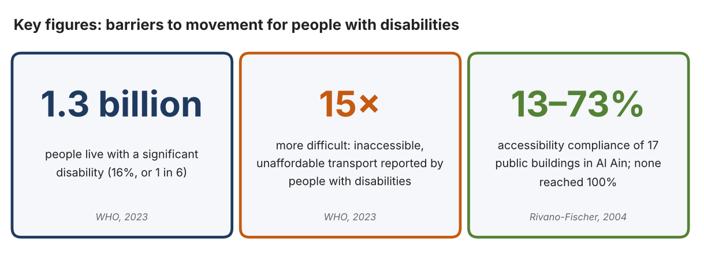
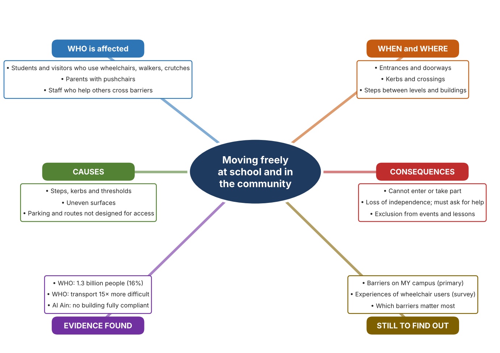
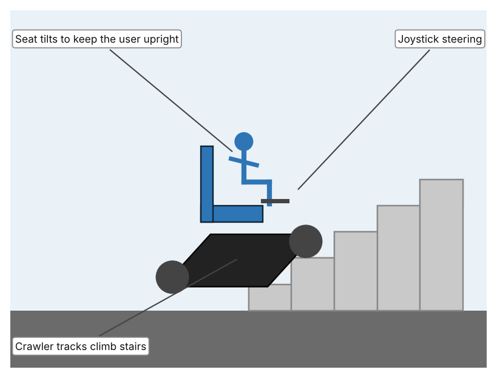
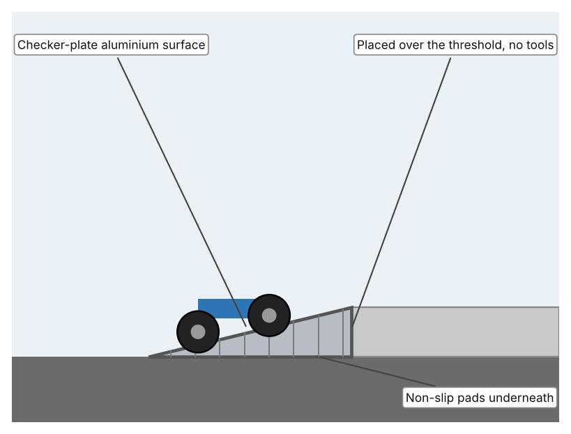
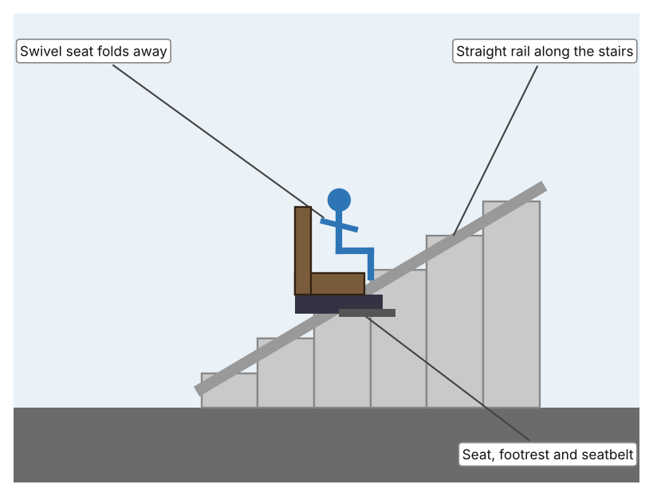

A1 · Design need
Identify and explain the problem faced by your client and community.
My client is the Inclusion and Facilities Committee of a Dubai school, represented by its Inclusion Coordinator. The school welcomes students, parents and visitors who use wheelchairs, walkers and pushchairs, but the campus and the streets around it contain kerbs, door thresholds, steps and uneven surfaces that most people never notice and that others cannot cross. The committee is concerned that these small obstacles stop people from entering classrooms, events and playgrounds on the same terms as everyone else, and it needs them to stop limiting who can move around the community.
The people most affected are students and family members with reduced mobility, including people of determination, injured students on crutches, grandparents with walkers and parents with prams. About 1.3 billion people, or 1 in 6 worldwide, live with a significant disability (World Health Organization, “Disability”), so every school and neighbourhood includes people who meet these barriers. Teachers and staff are a second group, because they are often asked to help when a barrier cannot be crossed.
The need is real because access depends on many small details being right at once. The WHO reports that inaccessible and unaffordable transport is 15 times more difficult for people with disabilities (World Health Organization, “Disability”). A study of 17 public buildings in Al Ain tested 79 accessibility items and found that no building met them all: compliance ranged from 13% to 73%, with routes best at 76% on average and parking worst at 19% (Rivano-Fischer). Being unable to enter a place, or needing help every time, takes away independence and dignity, and a school has a duty to its whole community.
Figure 1 summarises the key numbers. The 1.3 billion people are 16% of the world's population, and some people with disabilities die up to 20 years earlier than others, partly because of inequalities linked to exclusion and barriers (World Health Organization, “Disability”). The Al Ain study is from 2004, so it shows a pattern and not today's exact situation; I still need current evidence from my own campus. In my own words: obstacles that look small to me can decide whether another person can take part at all. Figure 2 is my mind map of the problem.
367 words


A2 · Research plan
Six research questions of different types, each with a priority, a research type and evidence.
| # | Question | Priority | Primary / secondary | Evidence | Brief answer |
|---|---|---|---|---|---|
| 1 | Factual: How many people live with a disability, and how much harder is transport for them? | High | Secondary | WHO fact sheet, 7 Mar. 2023 (Appendix A, Source 1) | About 1.3 billion people (16%). Inaccessible and unaffordable transport is 15 times more difficult for them. Some die up to 20 years earlier. |
| 2 | Factual: How accessible are public buildings in the UAE, and which features are weakest? | High | Secondary | Rivano-Fischer, 2004 (Appendix A, Source 2) | In Al Ain, 17 buildings scored 13% to 73% on 79 items. Routes averaged 76% but parking only 19%. None scored 100%. |
| 3 | Conceptual: Why can a small step, kerb or threshold stop someone who uses wheels? | Medium | Secondary | Essential Aids ramp listing (Appendix A, Source 4); Scewo specification (Source 3) | Small wheels cannot lift themselves over an edge. Thresholds of 75 to 110 mm are common enough that ramps are sold for those heights, and one stair-climbing wheelchair lists a 20 cm obstacle limit. This is my reading of the product data. |
| 4 | Debatable: Is it better to remove barriers by changing the building or by helping people cross the barriers that remain? | Medium | Secondary | Appendix A, Sources 3, 4 and 5 | Changing the building is permanent and fair to everyone but slow and costly. Helping people cross is quick and flexible but depends on equipment, cost and help. My view: both are needed, and the first choice should always be removing the barrier. |
| 5 | Debatable (challenges my assumption, UAE source): Modern buildings follow access rules, so is access still a problem at school? | High | Secondary | Rivano-Fischer, 2004 (Appendix A, Source 2); WHO, 2023 (Source 1) | For: rules are stronger than in 2004. Against: the UAE study found no fully compliant building and is the only one I found, so it is old. Conclusion: I cannot assume the problem is solved; my own audit must decide. |
| 6 | Factual (primary): Which barriers exist on our own campus, and how easily can people with reduced mobility move around? | High | Primary | Own access audit and student survey (Appendix A, Sources 6 and 7) | [Student data needed: write the audit counts and survey averages, then two sentences on the main pattern.] |
A3 · Existing products
Three significantly different products, each analysed with ACCESS FM, with pros and cons.
Product 1: Powered stair-climbing wheelchair (Scewo BRO)

Illustration by the author based on “Electric Wheelchair Scewo BRO,” MedicalExpo (Appendix A, Source 3). [Student: replace with a photo from the source, cited MLA 9]
Product 2: Portable aluminium threshold ramp

Illustration by the author based on “Aluminium Threshold Bridge Ramp,” Essential Aids (Appendix A, Source 4). [Student: replace with a photo from the source, cited MLA 9]
Product 3: Straight stairlift (Stannah Siena 600)

Illustration by the author based on “Stannah Siena 600 Straight Stairlift,” Ross Care (Appendix A, Source 5). [Student: replace with a photo from the source, cited MLA 9]
ACCESS FM analysis
| ACCESS FM | Product 1 | Product 2 | Product 3 |
|---|---|---|---|
| Aesthetics | Rugged, tracked, modern chair with a joystick; the page does not describe styling (MedicalExpo). | Plain silver checker-plate ramp that stays out of sight until used (Essential Aids). | Slim seat on a rail with five colour options and a seat that folds away (Ross Care). |
| Cost | From 39,000 excluding VAT; the page does not make the currency clear (MedicalExpo). | £59.90 (75 mm), £79.90 (100 mm) or £99.00 (110 mm height) (Essential Aids). | Price on enquiry (Ross Care). |
| Customer | A single wheelchair user who wants to move over steps and kerbs; load up to 120 kg. | Wheelchair and mobility scooter users crossing a doorway threshold; load up to 272 kg. | A person who cannot climb the stairs at home; load up to 160 kg. |
| Environment | Battery lasts 5 hours; the charging source and emissions are not stated. | Aluminium is rust resistant and the ramp needs no power (Essential Aids). | Power source and battery are not stated (Ross Care). |
| Size | 670 × 1,050 × 688 mm and 162 kg (MedicalExpo). | Width 70 cm and length 60–100 cm; weight 3.35–5.5 kg, so a person can carry it. | Folds to 344 mm wide and fits stairs at least 659 mm wide when unfolded. |
| Safety | Automatic stairs mode and seat tilt; climbs about 30 steps per minute. Bystander view: 162 kg of moving machine near others. | Non-slip pads hold it in place; no moving parts. Bystander view: a loose threshold edge is removed, but only where it is placed. | Seatbelt and a footrest that stops level with the landing; the seat can act as a barrier at the top. Bystander view: others are not affected. |
| Function | Climbs obstacles up to 20 cm at up to 72% gradient and drives at 6 or 10 km/h. | Bridges a doorway threshold up to 75–110 mm high. | Carries one seated person up and down a single straight staircase. |
| Materials | Crawler tracks; frame materials are not stated (MedicalExpo). | 3 mm aluminium checker plate (Essential Aids). | Straight silver rail; seat materials are not stated (Ross Care). |
Pros and cons
| Product 1 | Product 2 | Product 3 | |
|---|---|---|---|
| Pro | One person can move independently over stairs and obstacles in many places. | Very cheap, light, carried by hand and used anywhere there is a low threshold. | Reliable for a fixed staircase and designed to be safe, with a seatbelt and folding seat. |
| Con | Very high cost and weight; one user at a time, and each person needs their own chair. | Only helps with low edges, not stairs, and someone must place it. | Fixed in one building and only for stairs, and the price is not published. |
A4 · Design brief
Restate the need, summarise the research and the existing products, and state the design intent.
My client, the Inclusion and Facilities Committee of a Dubai school, needs the barriers that stop people with reduced mobility from moving freely around the school and community to stop limiting who can take part. The problem is large: about 1.3 billion people, or 1 in 6, live with a significant disability, and transport that is inaccessible or unaffordable is 15 times more difficult for them (Appendix A, Source 1). It is also local: a study in Al Ain found that none of 17 public buildings met all 79 access items (Appendix A, Source 2).
My research shows that small physical details decide whether a person can move or not. Compliance in Al Ain was best for routes (76%) and worst for parking (19%) (Appendix A, Source 2), and ramps are sold for thresholds as low as 75 to 110 mm, which suggests that even a low edge can block wheels (Appendix A, Source 4). My debatable questions showed two ways of thinking: remove barriers permanently, or help people cross those that remain. I decided both are needed and that removing the barrier is the better first choice. I also challenged my own assumption that the problem is already solved: the only UAE study I found is from 2004, so I cannot rely on it and must audit my own campus with my observation sheet and survey (Appendix A, Sources 6 and 7).
I analysed three very different existing solutions. A powered stair-climbing wheelchair uses tracks and a tilting seat to climb obstacles up to 20 cm, but it weighs 162 kg and starts at 39,000 before VAT, so it serves one person at a very high cost (Appendix A, Source 3). A portable aluminium ramp costs £59.90 to £99.00, weighs 3.35 to 5.5 kg and needs no tools, but it only helps with low edges and somebody has to place it (Appendix A, Source 4). A straight stairlift carries one person up a fixed staircase with a seatbelt and a folding seat, but it is fixed in one building and its price is not published (Appendix A, Source 5). They give me three ideas for inspiration: a personal vehicle, a simple bridge and a fixed installation. Each has a weakness that another covers.
My design intent is therefore to create a solution that helps people with reduced mobility cross, enter or move through the obstacles found at school and in the community, safely and with dignity. It must be affordable for a school, easy for one person to use without lengthy help, safe for the user and for people nearby, and flexible enough for the different barriers I find. I have deliberately not fixed what form it will take. That decision will be made in Criterion B, after I compare my own campus audit and survey with the evidence in Appendix A.
473 words
Appendix A · Research notes and sources
Secondary sources in MLA 9, with notes and where each source is used.
| # | Source (MLA 9) | Key notes | Used in |
|---|---|---|---|
| 1 | World Health Organization. “Disability.” WHO, 7 Mar. 2023, www.who.int/news-room/fact-sheets/detail/disability-and-health. Accessed 21 Oct. 2026. | About 1.3 billion people (16%, 1 in 6) have a significant disability. Inaccessible and unaffordable transport is reported as 15 times more difficult. Some die up to 20 years earlier. | A1; A2 Q1 and Q5; A4. |
| 2 | Rivano-Fischer, Daniel. “Wheelchair Accessibility of Public Buildings in Al Ain, United Arab Emirates (UAE).” Disability and Rehabilitation, vol. 26, no. 19, 2004, pp. 1150–57, lup.lub.lu.se/record/268195. Accessed 21 Oct. 2026. | 17 public buildings, 79 items. Compliance 13% to 73%; routes 76% on average; parking 19%. No building scored 100%. | A1; A2 Q2 and Q5; A4. |
| 3 | “Electric Wheelchair Scewo BRO.” MedicalExpo, www.medicalexpo.com/prod/scewo-ag/product-4612962-2803220.html. Accessed 21 Oct. 2026. | 162 kg; load 120 kg; crawler tracks; obstacle 20 cm; about 30 steps per minute; 6 or 10 km/h; battery 5 hours; 670 × 1,050 × 688 mm; from 39,000 excluding VAT. | A2 Q3; A3 Product 1; A4. |
| 4 | “Aluminium Threshold Bridge Ramp.” Essential Aids, www.essentialaids.com/mobility-scooters/mobility-scooter-ramps/threshold-bridge-ramp-110mm-high.html. Accessed 21 Oct. 2026. | 75, 100 or 110 mm height; 60 to 100 cm long; 3.35 to 5.5 kg; £59.90 to £99.00; 3 mm checker plate; load 272 kg; no tools. | A2 Q3; A3 Product 2; A4. |
| 5 | “Stannah Siena 600 Straight Stairlift.” Ross Care, www.rosscare.co.uk/products/stannah-siena-600-straight-stairlift. Accessed 21 Oct. 2026. | Load 160 kg; swivel seat 496 mm; folded width 344 mm; seatbelt; price on enquiry; speed and battery not stated. | A3 Product 3; A4. |
| 6 | Primary: campus access audit, completed by the student on [date]. Accessed own data. | [Student: summarise your counts.] | A2 primary question; A4. |
| 7 | Primary: survey of [number] people, completed on [date]. | [Student: summarise your averages.] | A2 primary question; A4. |
Primary research instrument 1: campus access audit
Student completes the access audit for the whole campus.
| Location | Step or kerb height (mm) | Ramp or lift present (Y/N) | Door width (mm) | Route clear (Y/N) | Notes |
|---|---|---|---|---|---|
| Main entrance | |||||
| Classroom block | |||||
| Playground | |||||
| Car park or drop-off | |||||
| Toilets |
Primary research instrument 2: survey
Rate each statement from 1 (strongly disagree) to 5 (strongly agree). Collect responses with permission and record no names.
| Statement | 1 | 2 | 3 | 4 | 5 | Total responses |
|---|---|---|---|---|---|---|
| I can reach every area I need without asking for help. | ||||||
| Steps, kerbs and thresholds make it hard to move around school. | ||||||
| I feel included in events held in different parts of the school. | ||||||
| The routes around school are clear and wide enough. |